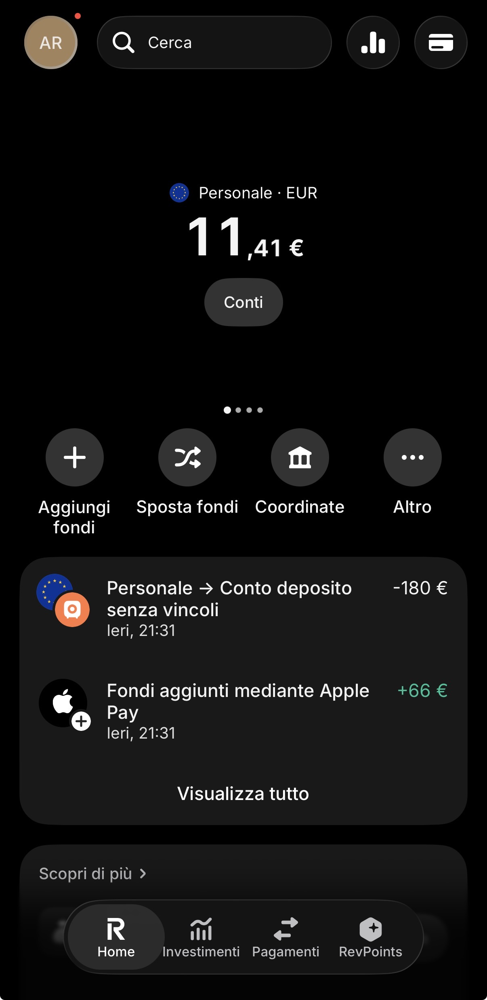

Apri il conto Revolut (gratis)
Apri il conto Revolut (gratis)
📌 In breve
Revolut è una banca a tutti gli effetti per conto e deposito, con licenza bancaria europea (Revolut Bank UAB, Lituania). Il piano Standard è gratuito per sempre, si apre in 5-10 minuti dallo smartphone, ed è usato da oltre 70 milioni di persone nel mondo (gennaio 2026). Se ti registri con il mio link e completi i requisiti del programma referral, ti mando 10€ di tasca mia — non è un bonus automatico di Revolut.
Perché questa guida
Quando cerchi informazioni su Revolut, trovi spesso pagine scritte da chi non lo usa o piene di tecnicismi. Qui trovi una panoramica onesta — cos'è, quanto costa, cosa serve per aprirlo — con link diretti alle guide di approfondimento per ogni argomento specifico.
Cos'è Revolut (davvero)
Revolut è un conto digitale nato nel 2015, usato da oltre 70 milioni di persone nel mondo (dato gennaio 2026). Per conto e deposito è una banca a tutti gli effetti: li offre Revolut Bank UAB, con licenza bancaria piena rilasciata dalla banca centrale lituana nel dicembre 2021, tramite una succursale italiana attiva dal 2024. Investimenti e criptovalute passano invece da due società diverse del gruppo, con tutele diverse dal conto — il dettaglio completo è nella guida sulla sicurezza →.

La dashboard di Revolut dopo il login: saldo, movimenti e accesso rapido a tutte le funzioni.
Appena crei l'account ricevi una carta virtuale gratuita che puoi usare subito per acquisti online o da aggiungere ad Apple Pay e Google Pay. Se vuoi puoi richiedere anche la carta fisica (plastica o in metallo a seconda del piano) per pagare nei negozi e prelevare.
Il piano base, chiamato Standard, costa zero euro al mese. Include già: conto in euro, carta virtuale, notifiche istantanee, bonifici SEPA, cambio valuta a tasso equo fino a 1.000€/mese e la possibilità di creare salvadanai automatici. I piani a pagamento (Plus, Premium, Metal, Ultra) partono da circa 4€/mese e aggiungono vantaggi come assicurazioni viaggio, accesso alle lounge in aeroporto e prelievi ATM più alti.
Confronto costi-benefici completo dei piani → — e se vuoi vedere come funziona nell'uso quotidiano (Pocket, cambio valuta, carte usa e getta), c'è la guida completa all'uso quotidiano →
Revolut in sintesi
| Voce | Piano Standard | Dettaglio |
|---|---|---|
| Canone | 0€/mese, gratis per sempre | Tutti i piani → |
| IBAN | Italiano, solo dopo la migrazione (non automatico) | Come funziona → |
| Prelievi ATM | 200€/mese o 5 prelievi, poi 2% (min. 1€) | Dettaglio → |
| Cambio valuta | Tasso equo fino a 1.000€/mese, poi 1% (uguale nel weekend) | Guida completa → |
| Carta fisica | Gratuita, consegna standard 6,99€ | Costi carta → |
| Assistenza | Solo in-app, via chat | Sicurezza e assistenza → |
| Tutela depositi | 100.000€ (conto + deposito, cumulati) — fondo lituano | Le 3 entità e le 3 tutele → |
Perché 70 milioni di persone lo usano
Il motivo non è solo il costo zero. È la comodità: apri il conto in pochi minuti, senza andare in filiale, e hai tutto sotto controllo da un'unica app. Ogni pagamento viene notificato all'istante, il saldo si aggiorna in tempo reale e puoi bloccare la carta con un tap se la perdi.
Carta virtuale immediata
Usala subito online o con Apple/Google Pay.
Cambio valuta vantaggioso
Perfetto per viaggi e acquisti in valuta estera.
Tutto da app
Gestisci conto, carte e salvadanai dallo smartphone.
Notifiche istantanee
Ogni pagamento ti arriva subito, zero sorprese.
Scopri come funzionano i RevPoints e quanto valgono →
Revolut conviene? Dipende dal tuo profilo
✅ Revolut conviene se:
- Vuoi un conto gratuito senza canone e senza filiale
- Viaggi spesso o paghi in valuta estera
- Vuoi carte virtuali/usa e getta per acquisti online sicuri
- Ti interessa un piccolo rendimento sulla liquidità (Deposito senza vincoli)
❌ Potrebbe non convenirti se:
- Preleghi contante spesso oltre i limiti gratuiti del piano
- Vuoi filiali fisiche o assistenza telefonica diretta
- Hai già avuto un conto Revolut in passato e vuoi il bonus (non sei idoneo)
- Cerchi un conto deposito vincolato a lungo termine con tasso fisso garantito
Cosa ti serve per aprire il conto
Prima di iniziare, assicurati di avere:
- Uno smartphone (iPhone o Android) con connessione internet
- Un documento d'identità valido (carta d'identità, passaporto o patente)
- Il tuo codice fiscale
- Una carta di debito/credito o un conto per fare la prima ricarica (anche 10€ bastano)
- Residenza in Italia (o in uno dei paesi supportati)
Non servono buste paga, redditi minimi o garanzie particolari. Revolut apre conti a chiunque abbia almeno 18 anni. Per i 10€ di bonus, però, serve un requisito in più: non devi aver mai avuto un conto Revolut in passato — è una condizione di Revolut stessa, non mia. Tutti i requisiti nella guida dedicata al bonus →.
Revolut è sicuro?
Per conto e deposito, sì: li offre Revolut Bank UAB, con licenza bancaria piena vigilata dalla banca centrale lituana, tramite succursale italiana dal 2024. I fondi sono protetti fino a 100.000€ per depositante (conto e deposito insieme, non sommati) dal fondo di garanzia lituano. Investimenti e criptovalute passano da due entità diverse del gruppo, con tutele diverse: fino a 22.000€ per gli investimenti, nessuna garanzia comparabile per le criptovalute.
L'app offre diverse protezioni: autenticazione biometrica (impronta o viso), blocco carta immediato, limiti di spesa personalizzabili e notifiche in tempo reale. Se perdi la carta o noti una transazione sospetta, la blocchi in un secondo.
Approfondisci: le 3 entità Revolut e cosa è protetto davvero →
Bonus di 10€: chi paga cosa, in chiaro
Revolut ha un programma referral ufficiale ("Invita un amico"): se inviti qualcuno con il tuo link e quella persona completa i requisiti, Revolut paga una commissione a te, non alla persona invitata. Su questo sito funziona così: se ti registri con il mio link e completi i requisiti ufficiali di Revolut, io ti giro 10€ di tasca mia via PayPal o bonifico, dopo una verifica manuale — non è un accredito automatico dell'app Revolut.
🎁 Come funziona, in breve
1. Registrati con il link promozionale
2. Verifica la tua identità e ricarica il conto (bastano 20€)
3. Ordina la carta fisica e fai almeno 3 acquisti reali
4. Inviami i dati richiesti: verifico entro 24-72 ore e ti mando i 10€
I requisiti esatti (importo minimo per acquisto, cosa invalida un acquisto, cosa fare se qualcosa non torna) e le condizioni aggiornate sono nella guida dedicata — qui trovi solo il riepilogo.
🆚 Non sei sicuro che Revolut faccia per te?
Confrontalo con le alternative prima di decidere.
Confronta 6 conti digitali →Domande frequenti su questa guida
Revolut è una banca?
Sì, per conto e deposito: li offre Revolut Bank UAB, con licenza bancaria piena dalla banca centrale lituana dal dicembre 2021. Investimenti e criptovalute passano invece da due società diverse del gruppo, con tutele diverse dal conto. Il dettaglio delle 3 entità →
Il conto Revolut è gratis per sempre?
Sì, il piano Standard non ha canone mensile e resta gratuito finché Revolut non cambia i propri termini. I piani a pagamento sono opzionali. Confronta i piani →
Chi paga davvero i 10€ di bonus, Revolut o Alex?
Li pago io. Revolut riconosce una commissione referral a me, non a te — la persona invitata non riceve mai nulla direttamente da Revolut in questo programma. Se completi i requisiti, ti giro 10€ di tasca mia. Leggi come funziona →
Quanto tempo serve per aprire un conto Revolut?
Circa 5-10 minuti. La verifica dell'identità è quasi sempre immediata; in casi rari può richiedere qualche ora, ma non giorni.
"Quando viaggio uso solo Revolut per il cambio valuta: niente commissioni della banca tradizionale, tutto sotto controllo dall'app. Per il resto delle domande — IBAN, carta, deposito, RevPoints — ho scritto una FAQ dedicata."
Altre guide Revolut
- ⚙️ Come funziona nell'uso quotidiano: Pocket, cambio valuta, carte
- 🎁 Come ottenere il bonus da 10€: requisiti completi
- 📊 Confronto piani Revolut
- 🔒 Revolut è sicuro? Le 3 entità e le 3 tutele
- 💰 Deposito senza vincoli
- ⭐ Come funzionano i RevPoints
- ❓ Tutte le domande frequenti su Revolut
- 🆚 Miglior conto digitale 2026: 6 conti a confronto
- 🆚 Trade Republic vs Revolut
- 📊 I miei risultati: quanto rendo davvero, a me, ogni mese
Informazioni sulla guida
Questa guida è basata sulla mia esperienza diretta con Revolut e verificata su fonti ufficiali, aggiornata ad agosto 2026. Il link referral è trasparente: se lo usi, ricevo una commissione da Revolut senza costi extra per te — i 10€ di bonus te li giro personalmente, non è un accredito automatico dell'app.
Ultimo aggiornamento: